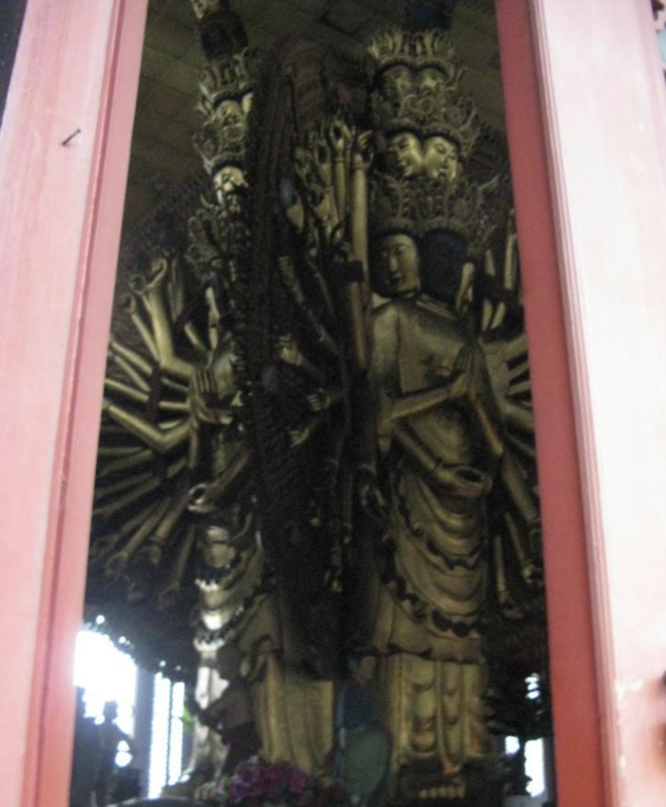

历史人文
千手千眼观音
中峰寺拥有 4000 只手和眼的「千手千眼观音」雕像，雕像是根据佛经里「千手观音」而雕刻，高 12 米，宽 8 米，采用缅甸进口楠木雕刻而成，其中莲花底座为水泥浇铸，高 1.6 米。
千手观音双臂合十，佛面生动安详，佛手的姿态柔软纤长。雕像每面有 1000 只手和 1000 只眼，四面就共有 4000 只手。雕像中每 1000 只手中有大手 48 只，分别执兵器、珠宝、花果等法器；手势自上而下，像团扇一样排列，线条流畅，姿势有伸有曲，有正面的也有侧面的，闪着金光，显示着观音的无上法力。
游客评价
山水客 ★★★★★ 千手观音造像震撼，中峰寺必看。